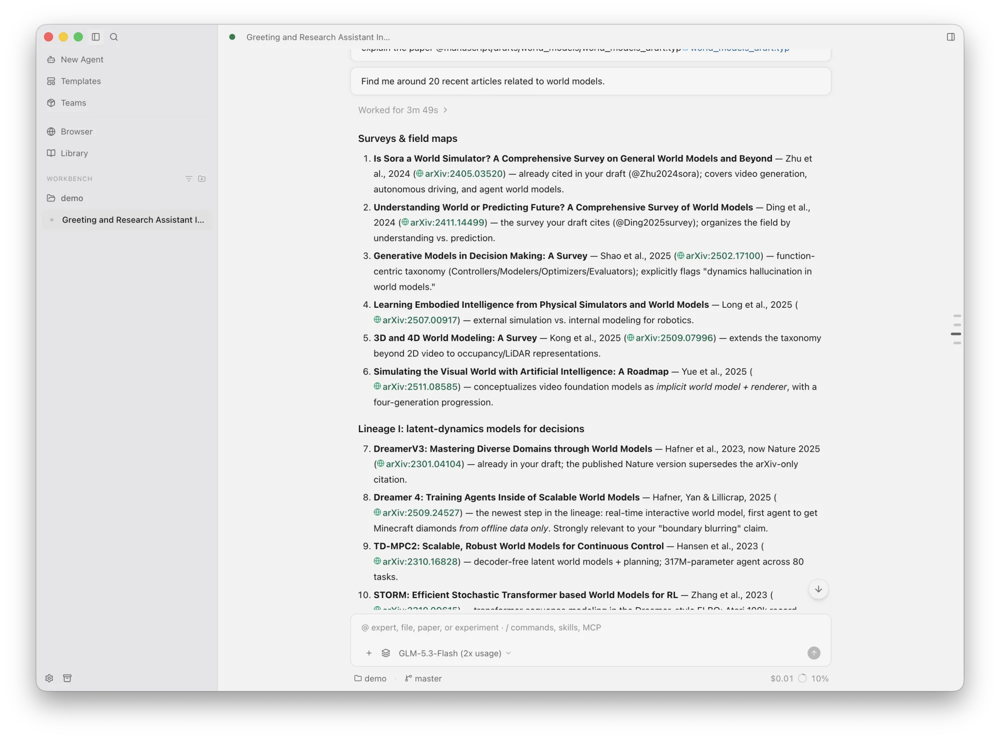
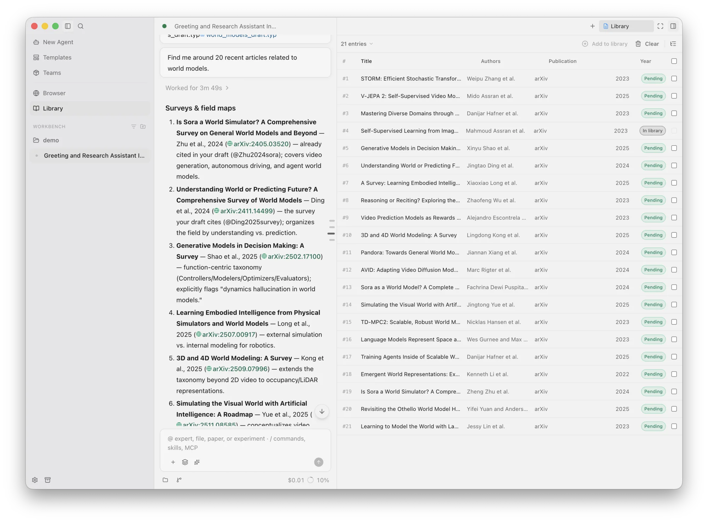
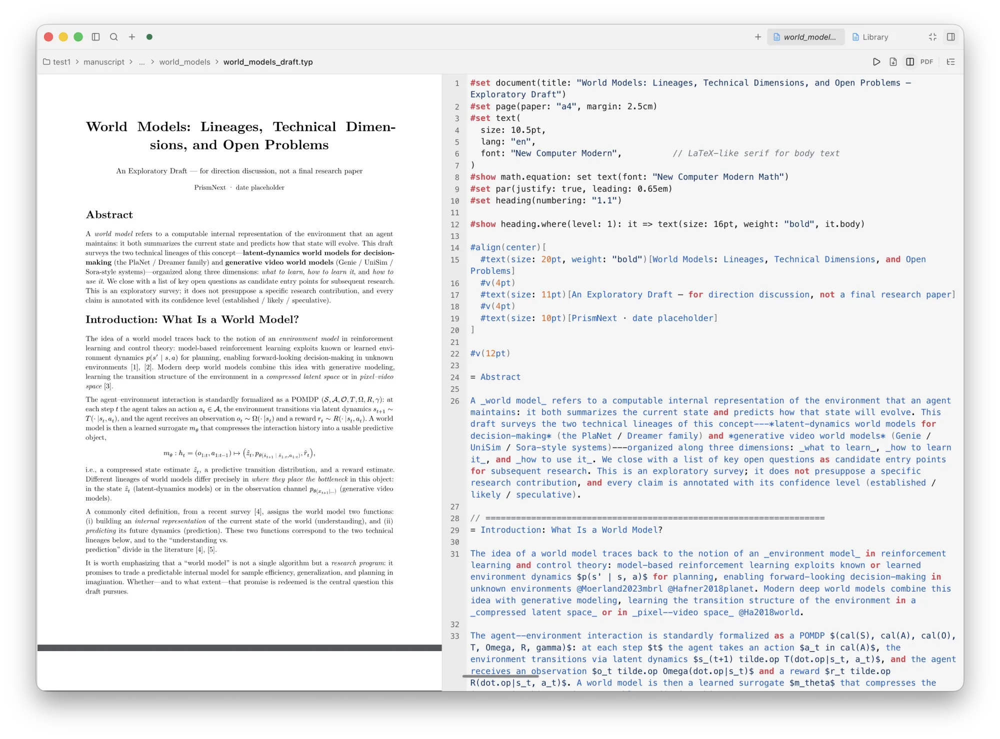
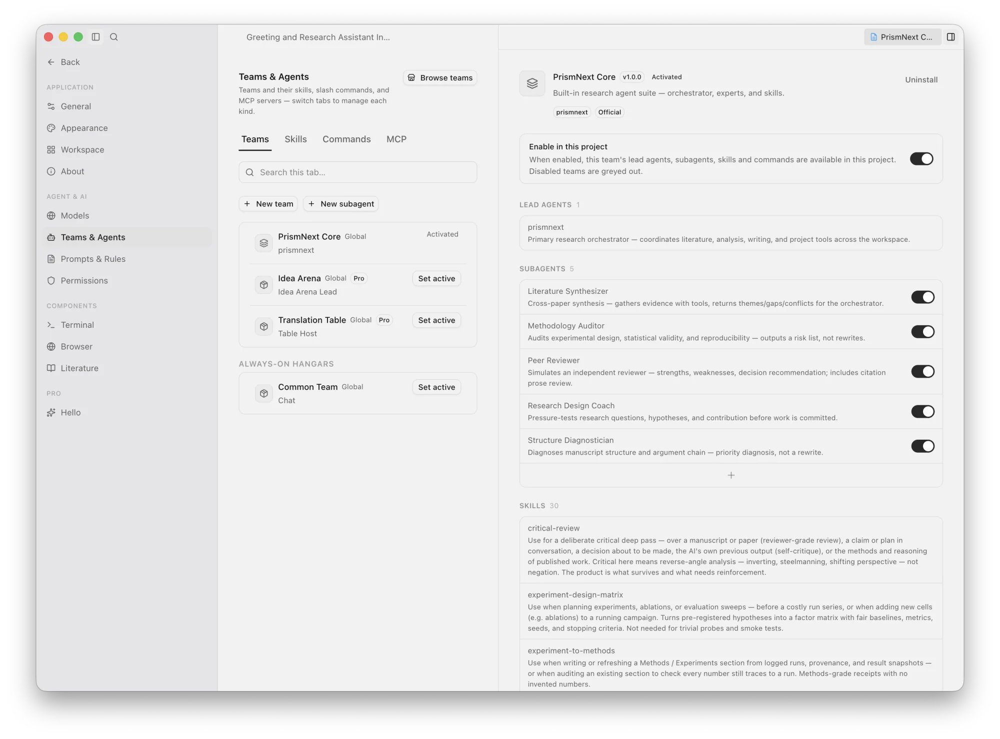
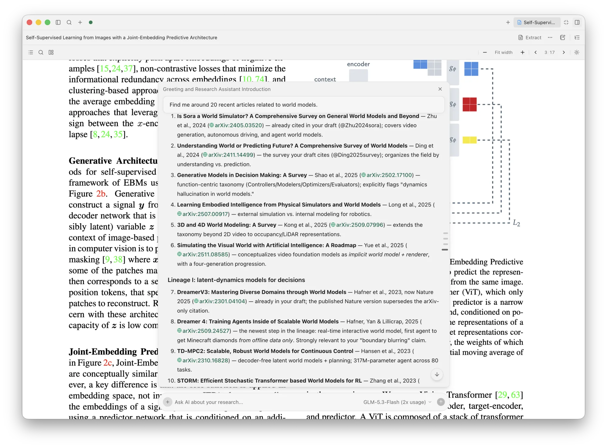
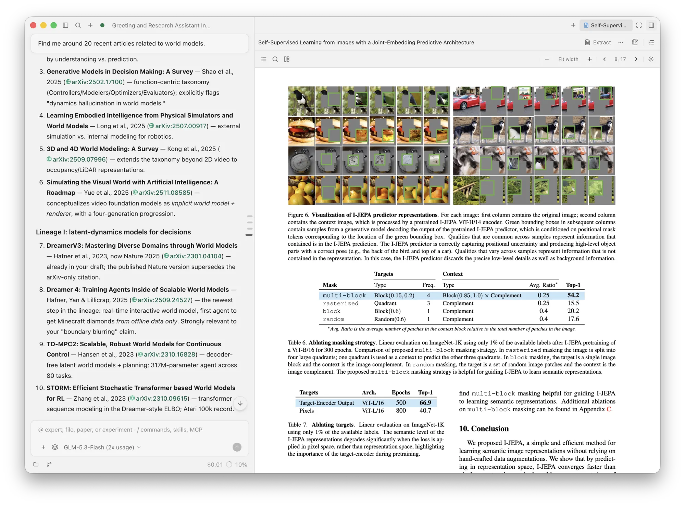

Early Access
Every paper. One desk.
A local-first, multi-project research workbench — powered by a research-enhanced embedded Pi agent and Teams v2. Literature, experiments, notes, Git, LaTeX & Typst — several papers, one desk.
Local-first · Open-Core · Bring your own API key · Zero telemetry

§1 — The AI research loop
One agent, the whole research loop
Reading, thinking, experimenting, and writing are one continuous workflow — the agent can drive the entire loop autonomously, or step in only where you ask.
Ideate
Brainstorm · hypothesis cards · idea ledger
Read
Library · Zotero · MinerU · web
Think
Notes · critique · derivations
Design
Brief · interactive Plan gates
Run
Gated experiments · provenance
Write
LaTeX · Typst · Proposed Changes
Review
Diffs · gates · human veto
review feeds the next pass — you stay in the loop
§2 — Architecture
Built on five pillars
An AI-agent application is only as trustworthy as the ground it stands on — five pillars carry every autonomous and collaborative workflow.
Multi-Project Workbench
Several paper folders stay open on one desk — each with its own chats, file tree, library slot, and modes. Switching focus changes the center and right panels without killing background agents.
Local-First Storage Boundary
Your manuscript lives in the project Git tree. Structured metadata lives in .workbench/; cross-project state in ~/.prismnext/. File watchers stay locked to authorized roots.
Embedded Pi Agent + Teams v2
Chat runs on a research-enhanced Pi host in the main process. Teams v2 staffs the desk with one Lead voice, Task-delegated specialists, skills, and PermissionGate.
End-to-End AI Research Loop
Read papers, question and critique, design and run experiments, then write — one continuous chain. Every experiment is gated by Plans and permission modes, monitored live, and receipted into runs.jsonl, so any claim in Methods can be traced to the run that produced it.
Remote Research over SSH
Connect to a lab machine from ~/.ssh/config. The Host runtime installs itself; chat, files, literature, compile, and long-running experiments execute on the server while your laptop stays the control desk. Model keys are sealed with AES-256-GCM.
§3 — How it works
From a spark to a manuscript
Research is more than plan-run-check. The desk carries the whole journey — and every stage is a conversation you can steer or hand over.
Spark the idea
Brainstorm with a dedicated debate team, capture ideas in a durable ledger, and stress-test hypotheses before committing compute.
Ground it in literature
The agents read what matters — papers, data, methods — and synthesize what is known, contested, and missing.
Design, run, verify
Experiment matrices go through Plan and permission gates; runs are monitored live and receipted. Results are checked against the method before write-up.
Write it up
LaTeX or Typst with live preview, citation-checked references, and every agent edit arriving as a reviewable diff.






§4 — Skills
Research standards, codified (30 Skills)
30 bundled scientific skills in PrismNext Core — each complete with formal protocol tables, LaTeX/Typst templates, and verification scripts.
Ideate, design & run · 7
Idea labDivergence before judgment, ideas persisted in dedicated folders.Hypothesis designSharpen a research question into falsifiable hypotheses.Experiment design matrixFix factorial / ablation matrix and compute budgets before execution.ML experiment protocolMulti-seed discipline, baseline fairness, aggregation scripts.Statistical rigorTest selection, effect sizes, power analysis scripts.Management & decision scienceDiD / IV / RDD econometric battery and behavioral experiment checks.Experiment-to-MethodsConvert execution receipts into publication-ready Methods prose.
Writing · 7
Writing designOutline gate before prose: promise map and argument arcs.IntroductionProblem-driven, contribution-first, or story-arc structures.PreliminariesNotation tables, problem setup, and symbol consistency.Methods chapterMotivation-driven structure backed by experiment receipts.ResultsNumbers carry run ids; negative results reported honestly.ConclusionResolves Introduction questions and articulates real limitations.Related workLibrary-to-synthesis narrative with grounded citations.
Figures · 6
Matplotlib figuresColorblind-safe styling and journal dimension guidelines.Observable Plot figuresDensity, hexbin, facets, geo views — headless SVG generation.TikZ & pgfplotsCompilation-ready TikZ / pgfplots templates.Typst figuresCeTZ / fletcher catalog templates compiled standalone.Figure pipelineData → figure script → LaTeX inclusion end-to-end.Panel figuresInteractive RightArea figures and plot contracts.
Reading & review · 5
Intensive reading notesStructured extraction and argument breakdown from PDFs.PRISMA systematic reviewPRISMA 2020 protocol, screening log, and flow counts.Critical reviewDevil's advocate peer review across claims, proofs, and evidence.Manuscript preflightPre-submission gate: compilation, citations, desk-reject risks.Rebuttal letterPoint-by-point reviewer rebuttal drafting.
Math & meta · 5
Symbolic mathSymPy-verified derivations exported directly to LaTeX.Numeric verificationSeeded probes, convergence orders, and worst-case error bounds.Manifold & geometryConnections, curvature, geodesics, gauge invariants verification.Lattice & algebraGröbner-basis membership, LLL lattice equivalence, number fields.Skill creatorDistill reproducible research workflows into custom skills.
§5 — Pro Teams
Pro Specialty Teams & Early Access
Beyond the open-core Core suite, PrismNext provides specialized multi-agent teams for high-stakes research milestones.
Multi-agent debate on research ideas: steel-man, devil's advocate, historian, and pragmatist stress-testing feasibility before compute.
Simulated conference/journal program committee: Area Chair + 3 independent Reviewers generating decision memos.
Point-by-point review triage, experimental feasibility matrix, and diplomatic rebuttal drafting.
Paper submission deadline tracking, critical-path dependency management, and structured drafting sprints.
Audits claims against evidence in the manuscript, flagging overclaiming, unsupported theorems, and missing baselines.
Cross-disciplinary concept mapping (e.g. bridging CS formalisms with economics/biology methodology).
Turn a vague research interest into testable hypothesis cards through deliberate divergence, convergence, and a documented kill list.
Keeps a durable record of closed ideas, their closure reasons, and the conditions required to reopen them.
§6 — Non-negotiables
Non-negotiables
These are not features — they are the ground rules the product is built on. Every capability, autonomous or assisted, stays inside them.
Free. On every desktop.
One installer per platform. Free core loop out of the box.